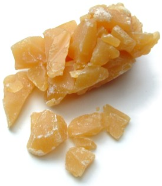
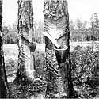
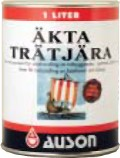
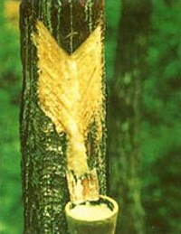
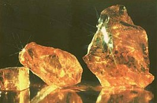
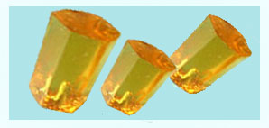

Genesis 6:14 "...and cover it inside and outside with pitch."
The pitch for Noah's Ark was probably not bitumen but the gum based resins extracted from pine trees. Such manufacturing practice has ancient origins, and timber ships were waterproofed by tree resin pitch well before the petrochemical industry was born. This substance is not necessarily "pitch black" either, this refers to coal tar or bitumen - a more recent invention. The core ingredient of a tree resin pitch is gum rosin [6] which can be extracted from a variety of tree species, notably pines.

Brewer's Pitch [9]: Natural pine tar pitch.
Image Tim Lovett 2005
Although not stated explicitly, it seems the job of the pitch was to waterproof the ark, which is the usual role of pitch in shipbuilding. For example, fiber rammed between planks and impregnated with tar was used form a watertight carvel hull of a typical sailing ship. This process is known as caulking.
Bitumen, the thick oil residue used to bind aggregate in a 'tarred' roadway comes from crude oil. The oil reserves came from vast collections of vegetable matter which were covered over with sediment late in the flood. So how could Noah have access to such a material before the flood? He didn't have to. Pitch has been made from tree products throughout history. In fact, building a timber ship, making pitch and fermenting wine involve similar skills and complementary technology. Noah's knowledge of alcohol could be put to good use, the pitch was likely soluble in alcohol making it easier to work than hot pitch.
The modern reader might think of "pitch" as being "pitch black" like bitumen. If the Ark was coated with black tar it would be very dark inside, especially on the lower levels. However, pitch derived from tree resin is amber colored. It could be made black by adding charcoal during processing [1]. Dark colors can also be an indication of the age of the trees, or an excessive use of heat during distillation [7]. Noah may have used a variety of pitch recipes for different tasks - such as a heavy dark pitch on the outside and a thinner coating of amber colored pitch on less critical internal woodwork.
The following picture shows the tapping of pine trees to collect resins used for pitch production http://www.forestry.uga.edu/warnell/kahrs/h/trails.html
|
On this tapped or "faced" longleaf pine, you can clearly see the diagonal stripes that were made in the tree to encourage pitch production. The tin directed the flow of pitch into a metal box or ceramic cup that hung on the nail. The scrapes were renewed frequently and, in later years, they were treated with sulfuric acid to induce more pitch production. The pitch was gathered once or twice a month. |
 |
The Romans used pitch for waterproofing ships and sealing barrels and amphorae.http://www2.rgzm.de/Navis2/Harbours/Guernsey/SPP-home.htm The Gallo-Roman ship Guernsey 1 was carrying a cargo of pitch. Recent research (Connan et al, 2001. [8] ) has located the source of the pitch to the Les Landes region of France, suggesting that the ship was on its way from there to Guernsey and on to Britain. The pitch may have been used for sealing or lining amphorae or barrels. Barrel staves were also found on the ship. There was no evidence that it was used for caulking the ship itself.
Rosin, also called colophony, is the very viscous substance that's left over after all the more volatile substances are distilled from the resin (including terpentine). Rosin is applied to the bows of string instruments like violins. This produces a tacky surface on the bow which, when drawn over the strings, encourages them to resonate and produce sound.
World production of rosin is estimated at 1.2 million tonnes per annum. Uses for rosins are subject to intense competitive pressure from synthetic compounds, and there is also competition between rosins derived from gum (i.e. tapped sources) and tall oils (pulp derived). [7]
Rosins can be used to waterproof paper and currently accounts for 30% of rosin production. Around 20% of the resins used in adhesives are derived from rosin. Key uses are in pressure sensitive solvent-based rubber cements, and mastics. The other key area is in hot-melt adhesives that are used in shoe manufacture, product assembly, carpet sealing tape, bonding paper (corrugated paperboards), book binding and laminates. Rosin derivatives are used with other resins and polymers in components of ink formulations where they impart binding, film forming and solvent qualities to the final product. Modified rosins with high melting points can be used in printing inks.
Rosin esters impart gloss, leveling and flow characteristics that are used in emulsion floor polishes and shoe polish. Other applications include the coating and sealing of cans in food packaging and the controlled-release encapsulation of fertilisers.
Swedish manufacturer, Auson AB http://www.auson.se makes genuine pine tar products today. The example below is described as "Pure natural product for wood preservation of wooden buildings, shingled roofs, boats, piers etc. This is the classical all-purpose-tar, suitable for everything, even for curing fissures in hooves and cloves (veterinary)" [2]

|
Pine Tar |
Gum rosin is the core ingredient in a wood based pitch. It is completely insoluble in water, and poses no threat to health and safety except for a slight fire hazard. Rosin dust is flammable when suspended in the air (as is wood dust, flour, and almost any other organic material).
See
Gum Rosin Material Safety Data Sheet, Portugese
gum rosin MSDS (pdf)
Hazards.
NPFA (National Fire Protection Association) hazard codes
Health:0 Fire: 1 Reactivity: 0
Degree of hazard: 4=Extreme 3=High 2=Moderate 1=Slight 0=Insignificant)
Flammable when finely divided and suspended in air (air-born dust)
DOT Hazard Class: (Non Hazardous, non-regulated)
Daniel McLarty investigates pitch based on tree resins. (Sept 2004)
From the 1700's to about 1970's this was quite an industry in the Southeastern U.S. (and elsewhere no doubt).
[3] Pine sap or gum resin as it is called was harvested from pine trees
and then distilled either on site or in later years in large distilleries
in towns. The still was simply a vessel in which the resin was heated to about
190 F (88 C). The vapor which was spirits of turpentine and water went out
the top into a condenser coil and was condensed into a liquid, and into a
separator barrel. The turpentine rose to the top and was drawn off through an
upper valve, and the water through a lower valve. What was left in the still was
liquid rosin which was drawn off through a valve and passes through strainers to
filter out impurities. The rosin quality was based upon its clarity and had
no black color to it. Rosin was used (and still is) for many things [4],
[5], notably for conditioning violin bow strings, and for pitch which seems
be to rosin thinned to a tar-like consistency.

Collecting Oleo Pine resin http://www.hungkuk.com.hk/products.htm
1. The pitch for Noah's Ark http://www.answersingenesis.org/Home/Area/Magazines/docs/v7n1_ark.asp Return to text
2. See pdf datasheet http://www.auson.se/images/paragraph/7564.pdf
Return to text
3. The Illustrated History of the Naval Stores (Turpentine) Industry: With Artifact Value Guide, Home Remedies, Recipes, and Jokes by Pete Gerrell. Return to text
4. Hung Kuk Enterprises http://www.hungkuk.com.hk/products.htm. Return to text

Gum rosin http://www.hungkuk.com.hk/a1.jpg
Manufacturer of various rosin based derivatives. Here's a few;
5. Sunny Rosin Company Ltd:http://www.gum-rosin.com/index.htm Return to text

|
Name of Index |
X
|
WW
|
WG
|
N
|
M
|
K
|
|
Color |
slightly yellow |
light yellow |
yellow |
deep yellow |
yellow brown |
yellow red |
|
conforms to color requirements of rosin for standard
glass
|
||||||
|
Appearance |
transparent
|
|||||
|
Softening Point (R. & B.) CMin |
76
|
75
|
74
|
|||
|
Acid Value mg KOH/g Min |
166
|
165
|
164
|
|||
|
Unsaponifiable Matter %Max |
5
|
5
|
6
|
|||
|
Insoluble Matter in Alcohol %Max |
0.03
|
0.03
|
0.04
|
|||
|
Ash %Max |
0.02
|
0.03
|
0.04
|
|||
Natural organic compound, mainly composed of resins, possesses chemical activity when dissolved in many organic solvents.
Uses: Important raw material for the manufacture of soap, paper, paint, and rubber; intermediate material for synthetic organic chemicals. In galvanized iron drums of about 225/230kgs net each. Must be kept away from heat and flame.
6. Rosin http://24.1911encyclopedia.org/R/RO/ROSIN.htm
(a later variant of resin, q.v.) or C0L0PH0NY (Cobphonia resina, resin from Colophon in Lydia), the resinous constituent of the oleo-resin exuded by various species of pine, known in commerce as crude turpentine. The separation of the oleo-resin into the essential oil-spirit of turpentine and common rosin is effected by distillation in large copper stills. The essential oil is carried off at a heat of between 212 and 316 F., leaving fluid rosin, which is run off through a tap at the bottom of the still, and purified by passing through a straining wadding. Rosin varies in color, according to the age of the tree whence the turpentine is drawn and the amount of heat applied in distillation, from an opaque almost pitchy black substance through grades of brown and yellow to an almost perfectly transparent colorless glassy mass. The commercial grades are numerous, ranging by letters from A, the darkest, to N, extra pale, superior to which are W, window glass, and WW, water white varieties, the latter having about three times the value of the common qualities. Rosin is a brittle and friable resin, with a faint piny odor; the melting-point varies with different specimens, some being semi-fluid at the temperature of boiling water, while others do not melt till 220 or 250 F. It is soluble in alcohol, ether, benzene and chloroform. Rosin consists mainly of abietic acid, and combines with caustic alkalis to form salts (rosinates or pinates) that are known as rosin soaps. In addition to its extensive use in soap-making, rosin is largely employed in making inferior varnishes, sealing-wax and various cements. It is also used for preparing shoemakers wax, as a flux for soldering metals, for pitching lager beer casks, for rosining the bows of musical instruments and numerous minor purposes. In pharmacy it forms an ingredient in several plasters and ointments. On a large scale it is treated by destructive distillation for the production of rosin spirit, pinoline and rosin oil. The last enters into the composition of some of the solid lubricating greases, and is also used as an adulterant of other oils.
7. GIFNFC Forestry Commission http://tree-chemicals.csl.gov.uk/review/markets.cfm Return to text
8. Connan J., Maurin B., Long L., & Sebire H. 2001. Identification of pitch and conifer resin in archaeological samples from the Sanguinet lake (Landes, France) : export of pitch on the Atlantic ocean during the Gallo-Roman period.. Revue d’archéometrie. Return to text
9. Brewer's Pitch. Ready to melt down for foodsafe watertight coatings of wood or metal containers. This sample was kindly sent by ark modeler Dan McLarty who has uncovered some good information about pitch - especially regarding its manufacture. See http://www.jastown.com/bulk/bp-293.htm or new website. The same sample was used in testing the pitch. Return to text
{kind=link}